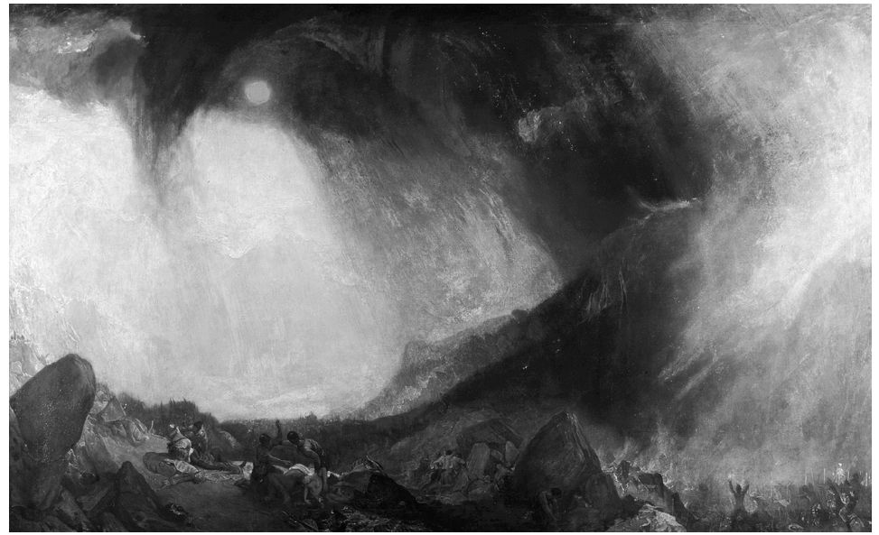
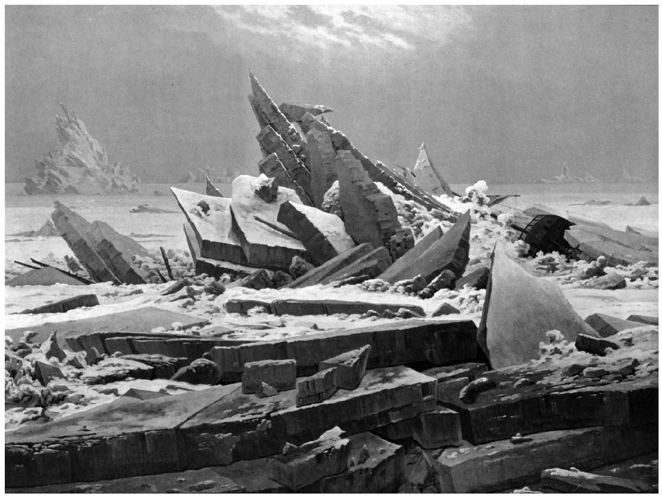
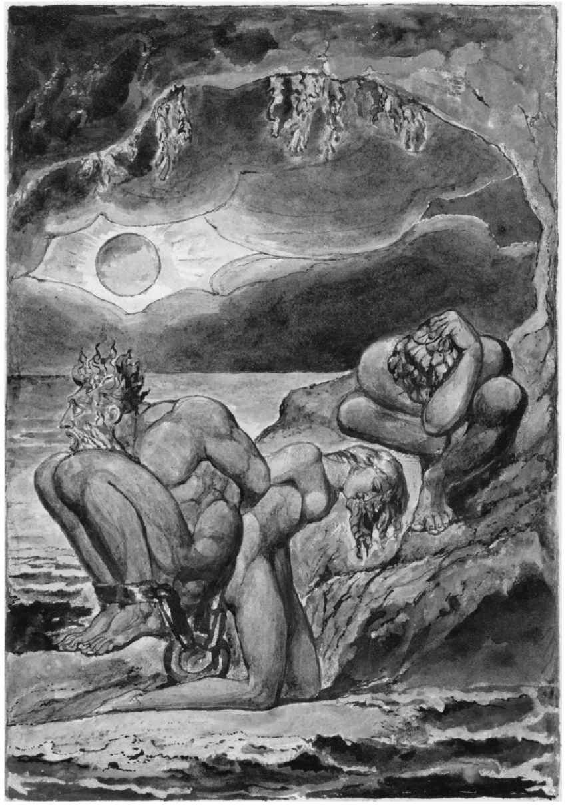

若正如我试图呈现的，由诗人充当先知和祭司，他们会预示或助祭什么样的宗教信仰呢？浪漫主义可以被视为一种新的宗教吗？我在第一章引用了T.E.休姆对浪漫主义的尖刻描述——“跌落的宗教”。他写道：“浪漫主义缘于理性主义者对传统的、‘古典的’基督教教义的批判，这一批判让我们无法自然宣泄宗教本能，于是我们就必然要寻求另外一种方式。”
（《沉思录》，1924）
若我们能从休姆倨傲且风趣的言辞中推断出他认为浪漫主义只是一例不良行为，那他的确抓住了浪漫主义的核心。我们并不难发现“人类是神圣的或者可能变得神圣”的说法。威廉·布莱克认为上帝的人类化身不仅仅只有耶稣基督，还有我们所有人类身上持久的能力：“上帝变得像我们一样，那我们也许可以像他一样。”（1788）1802年，华兹华斯写道：“是我们的灵魂神化了我们。”弗里德里希·施莱格尔则声称“每一个虔诚的人总是渐渐变成上帝”（1800）。爱默生在《神学院献辞》（1838）中说过，耶稣变得独一无二，不是因为唯有他变成了上帝，而是因为唯有他“看到了上帝化身为人类”。许多宗教信奉者认为，这种说法亵渎了神明或者至少是在夸大其词；而对另一些信奉者而言，这种说法引发了早期新教徒对宗教“狂热”的恐惧，这些新教徒被认定是16和17世纪宗教战争的罪魁祸首。美国超验主义运动与德国、英国的浪漫主义极为相似，爱默生在其中扮演重要角色。一位半信半疑的奉行者将该运动称为“自我神论”。（其实，“超验主义”这一标签具有误导性，因为其拥护者强调的是上帝的内在性而非超验性。）休姆极为鄙视维克多·雨果空洞的辞藻和模糊的宇宙观，若他知道雨果被尊为越南高台教的三圣之一，肯定会觉得非常好笑。高台教创立于1926年，至今仍有100多万名信徒。
或另举一例：长期以来大多数基督徒都认为，《新约》中的神迹可以证明耶稣就是救世主弥赛亚。大卫·休谟及其他启蒙哲学家将神迹重新定义为违背自然规律的行为，并因此将其视为无稽之谈而置之不理。在《宗教讲演录》（1799）中，弗里德里希·施莱尔马赫又用心理学术语重新定义了神迹：“每一个事件，甚至包括那些最自然、最普通的，只要其宗教思想占主导地位，那它就会变成神迹”，这一宗教思想让所有人都接触到无限的宇宙。他补充道：“对我来说，一切均为神迹。”施莱尔马赫和其他德国浪漫主义者引发了数十年后波士顿地区牧师们的“神迹争论”，这一争论在1838年爱默生的演讲中达到高潮。他说，耶稣“谈到奇迹是因为他体会到人的生命就是一个奇迹、人所做的一切事情均为奇迹，而且他还知道这一每日奇迹会随着其性质的升华而闪耀”。一些浪漫主义者对于神圣观也有类似的说法。例如，布莱克谴责传统的神圣观是邪恶的，提醒我们耶稣将圣殿中圣所里的幔子从上到下裂成了两半。“因为有生命的万事万物都是神圣的。”（1793）施莱尔马赫同意这种看法：“对于一个虔诚的人而言，宗教让一切变得神圣，即使是那些不神圣的、平庸的事物。”此外，1817年，济慈在给友人的一封信中写道：
“除了心灵情感的神圣性和想象的真实性之外，我对任何其他事情都没有把握。”
这里透露出的信息很明显：上帝、神迹和神圣，这三者早已脱离传统的“古典”范畴，已延伸至人类，甚至渗透到自然界中。仿佛想要比休姆先发制人似的，雨果在《上帝》一诗（写于1856年）中总结了自己的宗教观。诗中，他嘲笑那些将教义强加于上帝及“将黑暗和永恒深锁起来”的企图。但是，让我们用另一种方式重述休姆对浪漫主义宗教的描述。传统的，或多或少也是“正统的”基督教观点认为，上帝、灵魂和自然（或世界）三者之间的关系如同三角形，上帝位于三角形的顶点，灵魂和自然（或世界）分别为两个底角。除了化身为圣子耶稣基督之外，上帝是超验的；他不是自然的一部分，而是自然的创造者；它也不是我们灵魂的一部分，而是我们灵魂的创造者，而且只有当圣灵进入我们灵魂之时，它才成为我们灵魂的一部分。（事实上，“狂热的”新教教派强调我们内在的圣灵，该教派是浪漫主义的先驱。）基督徒的终极目的是与上帝合体，而达到这一境界需要人尽可能地与“自然”脱离联系，这里的“自然”涵盖包括肉体在内的所有物质实体。自然之中尽是指引我们找到上帝的标识，同时也充满了陷阱和谬见，它充其量会被冠以“上帝之创造物”的美名。但是，在18世纪许多受过教育的欧洲人心中，启蒙运动对迷信思想的攻击及哥白尼天文学和牛顿物理学的普及将上帝拉下神坛，上帝不再是人崇拜的对象、神迹的施行者或道德准则的独裁者，耶稣也被贬至主要的传道者和道德榜样之列。“上帝”只剩下孱弱的外壳，即自然神论的上帝，他只创造了宇宙及其恒常的规则，在此之后并不再对这个世界的发展产生影响。几代浪漫主义者大体上都接受原本超验、有力的上帝走下神坛的事实，换言之，上帝由原先三角关系中的顶点降至与灵魂、自然平齐的位置。1963年，诺斯罗普·弗莱写道：“在浪漫主义中，我最先看到的是一个深刻变化所带来的影响，主要不是在宗教信仰方面，而是在现实的空间投射方面。”浪漫主义者不再将自己的狂热崇拜之情垂直地指向超验的上帝，而是通常会作水平方向的转移——向外指向自然深处，向内指向灵魂深处。他们与理性主义批评家分道扬镳。后者早在他们之前就表示希望保留信徒的宗教体验、神秘感、狂喜感、服从无限的感觉，和对教堂及其艺术和音乐的审美愉悦。这就好似处于基督教三角底端的灵魂和自然是上帝的遗产受赠人——上帝死了，但其神性及其激发的情感却传承了下来。施莱尔马赫的宗教著作对于浪漫主义者最为重要，早在反浪漫主义者休姆之前，他就赞同宗教是人性中固有的这一观点，却摒弃了“神学体系”，因为它不是“宗教本身”，而只是“一纸空文”。“宗教的要旨就是以最高统一性感知到，所有在情感上触动人的都是一种东西。”宗教本身源于“与自然合为一体并根植于自然的一种感觉”。这是对我们赖以生存的宇宙的一种无声的屈服。相较于弗莱的观点，我认为这更多地是信仰方面的变化，因为它几乎用情感取代了信仰。无论如何，情感已成为核心，而非教义。斯塔尔夫人在《柯丽娜》中写道：“宗教是心中最纯粹的情感。”
自然宗教
当然，早在浪漫主义之前，就已有人发现自然界存在神、存在其智慧与力量的迹象。《诗篇》第19章开篇写道：“诸天述说神的荣耀，穹苍传扬他的手段。”数位情感主义诗人或浪漫主义诗人，如克洛卜施托克、弗里德里克·布伦、克里斯托弗·斯玛特、威廉·柯珀和柯勒律治，均在这种信念的指导下创作诗歌。他们发现神不仅处在苍穹之中，也见于细微之处。根据斯玛特（1754）的观点，不仅雷电、地震和火山能彰显造物主的存在，祂也“存在于细小的霉菌中，/同样明显，同样强大”。维克多·雨果在《狂喜》（1829）一诗中也沿袭了这一惯例，着眼于更宏大的范围。他听见树林和山丘低声询问夜空中的星星和大海里的波涛，星星和波涛回答道：“是主，是主耶和华！”
但这并不是一个独特的浪漫主义观点。在《丁登寺上游几英里处的诗行》（1798）一诗中，华兹华斯描述了一种心境，就像是处于一种神秘的恍惚状态之中：
这不是上帝的想象也不是上帝的杰作，而是“事物的内在生命”。这一表达很是模糊，却清晰地描绘出一个无处不在的、“水平的”神的形象，并且暗示这个世间的事物充满活力。之后，在这首诗中，华兹华斯又回到这种心境或想象的力量之中：
这种“东西”、这种“动力和精神”，就像华兹华斯在诗中所写的那样，与上帝关系密切，但又不是极其密切。但是，华兹华斯使用了宗教语言，不仅在这些诗节中，而且尤其是在诗歌的结尾处。他在此宣称：
后来，华兹华斯变得更为保守时，这些诗行遭受某些读者的诟病而令其陷入防御状态。但是，这些诗行依然能够证实浪漫主义者对大自然的崇敬之情。
一些浪漫主义者以某种方式保留了基督教信仰，认为自然是上帝的杰作。除此之外，他们还补充了一个观点，认为自然也是上帝的语言，这种观点不太常见却由来已久。在《午夜寒霜》（1798）中，柯勒律治对他还是婴儿的儿子说道：
1796年，瓦肯罗德写道：“自然就像神口中说出来的不完整的神谕。”人们普遍宣称，尤其是在德国诗歌中宣称，自然向那些愿意倾听的人传递信息。诺瓦利斯虚构出一句“密语”，它能够消除如今盛行的一切伪知识（《如果数字和图形不再一如既往》，1802）。在《启程》（1815）一诗中，艾兴多夫写道：
在《灌木丛》（1802）一诗中，弗里德里希·施莱格尔想象的不是话语，而是一种意味深长的“声音”，一种大海咆哮、树叶婆娑的“声音”。诗歌结尾写道：
音乐家们喜爱这首诗，这不足为奇：1819年，舒伯特为这首诗谱了曲，舒曼也将该诗的最后几行用作其钢琴曲《C大调幻想曲》第17号（1839）的警句。一些后期法国浪漫主义者将这一观点推向不可思议的极端。奈瓦尔在《金色诗行》（1845）中写道：“卑微的生灵常有神祇藏身；/如同新生儿的眼睛，被眼皮遮挡，/纯粹的精神在群石的外表下成长！”“自然是一座神殿，”波德莱尔在《契合》（1857）一诗中写道，“圆柱皆有灵性，/从中发出隐隐约约说话的音响；/人漫步行经这片象征之林，/它们凝视着人，流露出熟识的目光。”
对于浪漫主义者来说，德国画家卡斯帕·大卫·弗里德里希似乎把他们的观点都体现在他那精工细作、令人难忘的风景画中。其中很多画作都呈现了冷杉林中的哥特式废墟，或冬日里光秃秃的橡树（如《橡树林中的修道院》，1809—1810），让观赏者觉得难以捉摸：随着时间和自然对它们的作用，哥特式建筑变得“自然”了吗？抑或相反，自然是教堂或修道院，就像波德莱尔的神殿一样，给予我们宗教启示？若是这样，这种教义会消失于现今理性的萧条期和没有归属感的城市吗？这些绘画的美如此令人着迷，就像济慈谈论他的希腊古瓮时所说的那样，能够“把我们从思想中抽离”，让我们的宗教情感四处溅溢，身处一种出神状态，满怀敬畏。弗里德里希还创作了几幅山石林立的画作，画作中均有十字架或者耶稣受难像高高地耸立在凸露的岩层上，其中最著名的就是那幅《山上的十字架》（1807—1808）。镀金的画框上方雕刻着天使的头像，下方是上帝之眼，画中山石交错的山坡上，林立着一棵棵笔直挺立的冷杉，再往上是一个十字架，上面是殉难的耶稣像；耶稣像面部并不正对着我们，而是朝着夕阳的余晖；圣光从山崖下方向上射向无尽的苍穹（虽然这在现实中不可能），天空被染红了。如果这个祭坛装饰画是为教堂而作，那么它属于哪个教派呢？在许多方面它很明显属于基督教，但它是否也描绘了基督教堂美丽的日落，如同马修·阿诺德在《多佛海滩》中所描绘的信仰之海“那忧伤、咆哮久久不息的退潮之声”？
希腊异教信仰
诗人将自然或石头之类的自然之物人格化，这与异教徒的多神教仅有一步之遥。奈瓦尔在另一首十四行诗《黛尔菲卡》（1845）中写道：“你终日为之哭泣的诸神终将归来，时光将带回远古昔日的秩序。”华兹华斯认为，“这个尘世”，“豪夺淫逸”，让他十分孤独，与大自然十分疏离；他宁愿成为异教徒，这样就可以看到海里的普罗透斯，听到特里同吹响号角（“这尘世拖累我们可真够厉害”，1807）。大多数情况下，华兹华斯从中世纪的废墟中汲取想象，这种对希腊男神、女神及仙女的向往对他而言确实异乎寻常。但是，新生代英国诗人拜伦、雪莱和济慈却常常以此作为诗歌主题。例如，在《赛吉颂》（1820）一诗中，济慈看到赛吉睡在她的丘比特身旁后，表示：“我要做你的祭司，为你建庙堂/在我心灵未经践踏的地方”——“心灵”（mind）是希腊语“赛吉”（psyche）的英译。没有哪个基督教寓言像异教神话那样强烈地吸引着济慈。雪莱也是如此，他自称是无神论者，却在这些相同的异教神话中找到了宗教真理。其最伟大的作品《解放了的普罗米修斯》（1820）深刻反思了人类的朋友普罗米修斯与暴君朱庇特之间的斗争；他笔下的英雄放下仇恨，以一种基督式的自我牺牲推翻了暴政。
然而，受到希腊异教狂热崇拜影响最大的却是德国。歌德甚至在其“古典主义”成熟之前，就借普罗米修斯之口，表明要摆脱残暴众神的控制，并要颠覆正统文学的审美情趣。“诸神啊，在太阳下我找不出比你们更可怜的东西！”普罗米修斯蔑视诸神，认为他们只不过是孩童和乞丐这些愚蠢幻象的投射，于是，他开始“按照我的形象”创造人类。写下了那个时代最具影响力的异教诗篇《希腊诸神》的，正是歌德的友人席勒。这首挽歌哀悼了在基督教和科学双重重压之下灭绝的诸神。从前，仙女们居住在每一处山林水泽，当诸神走过凡间时，爱上凡人，将其中一些带到奥林匹斯山，并与她们生下凡人或神，而如今，这世界已一片荒芜。“现代学者解释，/太阳不过是没有生命的火球，在那儿旋转/那时却说是日神赫利俄斯驾着黄金的马车，/沉静威严。”“美丽的世界，而今安在？”希腊神话中的人性之花都已落英缤纷，“受到一阵阵可怕的北风洗劫。/为了要抬高一位唯一的神，/这个诸神世界只得消灭”。诗中“唯一的神”指的是那个“由女性人类所生”的“神圣的野蛮人”（heilige Barbar）。毋庸置疑，这首诗歌一经面世（1788），就遭到路德教会满腔义愤的牧师们的公然抨击。然而，对像荷尔德林这样的浪漫主义一代来说，这倒给诗歌平添了一分魅力。荷尔德林在挽歌《面包与美酒》（1800—1801）中也询问过诸神去哪里了。“雅典衰老了，底比斯也是”，奥林匹亚不再有竞技比赛。“为什么连那些古老而又神圣的剧院也沉默了？”席勒修改了《希腊诸神》的结尾部分（1800），宣告诸神已经回到品都斯山脉的家中，但却“在诗歌中永垂不朽”。荷尔德林也想象诸神现在正处于另一仙境——“众神仍在，/可已在高高的头顶之另一世界”——但他们会适时而归。与此同时，我们这些诗人饮着“酒神”的美酒，写作赞美诗向他表示敬意。这里“酒神”指的既是狄俄尼索斯又是耶稣。
在法国，阿尔弗雷德·德·缪塞也沉浸于一种类似的怀旧之情中：“哦希腊！……//我是你古时的公民；/我的灵魂与蜜蜂一同迷失在你的门廊之下。”（1831）但是，在意大利，贾科莫·莱奥帕尔迪在《致春天，或论古代寓言》（1824）一诗中几乎寻求不到失去诸神的慰藉。他哀叹“从前那美好时代”的消逝，那时诸神在山顶跳舞、牧羊人沿着河岸聆听牧神潘的排箫之声。现在我们和他们没有血亲关系，奥林匹斯空空如也，雷电不再由宙斯司掌，它随意游荡，恐吓人类，不再区别对待无辜之人和有罪之徒。最终，莱奥帕尔迪求助于自然，通过一句“若你仍在”，绝望地恳求自然聆听我们的烦恼，或者在自然的某处有一生命，即便它不会同情我们，至少也会留意到我们的悲伤。
崇高
上文中，我们提到了华兹华斯《丁登寺》一诗中的“崇高思想的欢乐，一种超脱之感，像是高度融合的东西”。“崇高”这一理念在18世纪得到广泛传播，一方面可以用于表示写作——“崇高”一词曾被用来翻译朗吉努斯文艺理论中的古希腊词语“hypsos”；另一方面也可用于描述像华兹华斯的“意识”这种思想状态，以及山岳、海洋和瀑布等自然之物。崇高通常与“美”相对，“美”被认为是温柔、宁静，通常具有女性色彩的气质，适用于形容连绵起伏的山丘、肥沃的山谷和悉心照料的庄园；崇高会引发对广袤无垠、力量无穷的荒野和难以掌控的自然的恐惧。然而，这种恐惧是远处的恐惧，旁观者可以足够安全地凝视着它，不用逃离。伊曼努尔·康德在《判断力批判》（1790）一书中，把高悬的山崖、狂暴的雷云、火山、飓风、“无边无际的被激怒的海洋”、万丈瀑布等称为压倒一切的东西；与此相比，我们的力量十分微不足道。
崇高的自然唤起了我们灵魂中的崇高。再回到我们先前提到的基督教三角关系：去除上帝这一终极崇高力量之后，我们在自然中（自然已不再被视为他的创造物），以及对其崇高有所感应的我们自己的心灵中再次发现他的崇高。有时，最崇高的自然的确看上去就像心灵本身，正如华兹华斯在《序曲》（1805）中有关翻越阿尔卑斯山的那段宏大描述一样：
在诗的结尾，在斯诺登山顶上的一个类似的瞬间，这个场景展现了“强大心灵的完美意象”。看到同样的美景，雪莱朝着勃朗峰下的阿尔夫峡谷呼喊：“令人目眩的峡谷！当我凝视着你/我仿佛置身在非凡奇妙的梦境，/审视我自己独特的幻想，/我自己的，我的人类心灵。”（《勃朗峰》，1817）更多时候，正如我们在柯勒律治、施莱格尔、奈瓦尔等人的诗中所见的那样，壮观的自然景色似乎在对专注的心灵意味深长地讲述着什么。俄罗斯诗人巴拉滕斯基站在令人目眩的大瀑布前，“我的心似乎明白了/你无言的表达”（《瀑布》，1821）。然而，对莱奥帕尔迪而言，崇高的维苏威火山大肆毁灭人类生命并漠然置之，它似乎只剩下残酷，甚至是比残酷更为糟糕的东西（《金雀花》，1836）；在此，他身处浪漫主义的边缘，尽管仍然受到激励去与这座巨大的火山对话，但是已不再抱有任何幻想。
至于文学作品中的崇高，我们可以在莪相的作品中找到，因为他的作品中不仅有岩石突兀、饱受风雨的海岸等崇高的场景，而且还有其特有的（或麦克弗森的）表现手法；其作品富有《圣经》韵律，充满含糊却悲惨的情节并运用了大量的反问句等。1757年，托马斯·格雷将弥尔顿描述为“他，乘着崇高/在狂喜的六翼之上”，埃德蒙·伯克在《崇高与美丽概念起源的哲学探究》（1757）中也借用了《失乐园》中崇高的例子。莎士比亚，尤其是他的悲剧，但丁、荷马以及其他伟人，均因他们的崇高而受到赞扬。圣伯夫歌颂雨果的“崇高飞翔”（1829）；实际上，翱翔已成为崇高的主旋律。
也正是在此时，18世纪90年代初期，交响乐开始变得崇高起来。毫无疑问，这主要是因为其震耳欲聋的声音所带来的巨大力量和交响乐突然转调的能力。1813年，E.T.A.霍夫曼发表了一篇文章探讨贝多芬的器乐，那音乐“为我们开启了怪异且无法估量的王国，耀眼的光芒刺透王国上方漆黑的夜空”；我们感到“无尽的渴望所带来的痛苦，其间每一次欣喜乘着欢快的歌声升至高空，复又降了下来，直至被吞没”——那“无限的渴望正是浪漫主义的精髓”。在这之后，最能代表崇高的人物当属贝多芬。
在哲学家和诗人广泛讨论崇高之后，浪漫主义画家也竭尽全力以崇高的方式描绘崇高的景象。J.M.W.透纳擅长运用模糊的笔法、明暗的鲜明对比以及多样化的视角，生动地再现陆地或海面上可怕的风暴。在《暴风雪——汉尼拔和他的军队翻越阿尔卑斯山》（1812）一画中，乌云铺天卷地，暴风雪即将呼啸而来。这样的场景下，骁勇善战的迦太基人显得十分渺小；在另一个相似主题的画作《暴风雪——汽船驶离港口》（1842）中，我们从一个难以想象的角度，而不是从安全海岸的角度，看到一艘汽船被困在一个风浪和雪雾形成的离奇的漩涡中。弗里德里希的绘画方式与透纳自由、素描式的画法几乎截然相反，但他精心绘制的风景画也同样令人心生敬畏，回味无穷。他的画作中经常75出现一两个背对我们、视线与我们一致的人物，如他在《林中的轻骑兵》（1814）一画中描绘了一个矮小骑兵，没有骑马，眼睛紧盯着冬日里一片无法穿越的常绿林。但是，他却能描绘出同莱奥帕尔迪笔下的维苏威火山一样的残酷、冷漠的崇高景象。在他的《北极冰海遇难船》（1824）一画中，船只遭到巨大冰块的撞击后，慢慢地四分五裂，变得支离破碎，似乎比透纳的那几幅沉船画中充满漩涡的大海更加令人恐慌。

图9 J.M.W.透纳，《暴风雪——汉尼拔和他的军队翻越阿尔卑斯山》（1812）。画作中的崇高。在雄伟的阿尔卑斯山脉和高耸的暴风云面前，这一人类历史上的重大事件几乎化为乌有。而透纳粗粝的笔触让我们难以解读这一场景，画作中的一切因此变得更加令人畏惧
艺术之宗教
如果诗人已经成为现代的先知和牧师，我们自然就可以将古代先知和牧师看作诗人。人们逐渐将《圣经》视为文学作品，并以新的方式进行鉴赏。尽管对有些浪漫主义者来说，把《圣经》置于《伊利亚特》或《哈姆雷特》这类伟大的文学作品之列，实际上是赋予其极大的权威；但是，对于正统的信徒来说，只是去鉴赏《圣经》，将其视为文学作品，就是否认《圣经》的权威。无论如何，现在“作为文学的《圣经》”这一概念已司空见惯，它已成为上千门大学课程的名称，并在情感主义和浪漫主义这两个历史时期获得了长足发展。罗伯特·洛斯探究了《旧约》诗行的结构，其作品在欧美国家被广泛阅读和探讨。我们注意到麦克弗森可能是受到他的影响而在其莪相式诗歌中运用了类似的平行结构。

图10 卡斯帕·大卫·弗里德里希，《北极冰海遇难船》（1824）。该画作中的崇高与透纳的崇高风格迥然不同。弗里德里希的精细笔法显示了画作中心那几乎可被视为建筑的背后那股气势磅礴、残酷无情的力量，这一力量能轻易地摧毁船只的右翼
德国哲学家格奥尔格·哈曼认为《圣经》本质上是诗性的，并认为上帝是“最初的诗人”（《袖珍美学》，1762）。布莱克说过，《圣经》“是诗歌，也是诗歌的灵感来源”；“《新约》和《旧约》是伟大的艺术代码”。布莱克篇幅较长的诗歌往往都充满了《圣经》典故和意象，但是，当他将《圣经》纳入自己的神话谱系时，他既不害怕改写《圣经》，也不畏惧探寻其中的“地狱之理”［infernal sense，与“内在含义”（internal sense）双关］。《圣经》对华兹华斯来说不太重要，但是，他在《序曲》（1805）中对“犹太之歌”的力量做出了回应。布莱克探讨过“《圣经》的崇高”，柯勒律治也认同“崇高生来就属于希伯来”而非希腊这一观点。拜伦曾写道，无神论者雪莱“将《圣经》作为文学作品大加赞赏”，并尤为推崇《约伯记》、《传道书》和除《诗篇》以外最“富有诗意”的《雅歌》，这无疑让雪莱显得过于虔诚。雨果、维尼及其他法国作家也经常运用《圣经》，他们不仅改写其中的故事，还借鉴其表现手法。
德国哲学家、历史学家J.G.赫尔德强调《圣经》是人类生活在特定时间和地点的产物，正是他强有力地改变了同时代人阅读《圣经》的方式。《圣经》的作者希伯来人通常用一种华丽、隐喻、“东方式”的手法创作诗歌，若将他们视为科学家或历史学家则完全违背了他们的精神。在赫尔德之后，数位德国作家，像他们的英国同行一样，在《圣经》中寻求比字面上的真理更为深刻或位于更高层面的东西。施莱尔马赫写道，在《圣经》的“创造性诗意的冲动”中，我们试图在自己身上唤起一种更加崇高的心境，但是，如果我们对其采取“奴性的敬畏态度”，那么它将会变为一座陵墓。荷尔德林翻译了《圣经》文本，但是，他认为宗教情感无法通过文字的阐述或概念，而只能通过神话来表达。赫尔德推测，随着符合我们时代的新启示的出现，可能会出现新的《圣经》。弗里德里希·施莱格尔在论述中世纪“永恒的福音”的观点时，提到它体现了“三位一体”中的第三位格，并且宣称新的《圣经》不是单独的一本《圣经》，而是一套丛书；这套丛书正是最初的圣约书。布莱克非常了解这一古老传统：他写了一部诗集，名为《永恒的福音》，并向世人许诺将亲手创作一部新的《圣经》。
如果说许多浪漫主义者把《圣经》当作文学作品，那么他们也把教会当作艺术。谢林、诺瓦利斯、瓦肯罗德和蒂克均发现天主教教会的礼拜仪式是与其教义截然不同的宗教灵感的来源。夏多布里昂在长篇巨作《基督教真谛》（1802）中对基督教的文学和艺术进行了阐述，所用篇幅远远超过其对教义的阐述。他写道：“你不可能进入一座哥特式教堂而感觉不到一种战栗和一种模糊的神性。”就是这种战栗吸引着夏多布里昂和许多其他对其做出回应的人。这种战栗是一种美学魅力，一种崇高的震颤，一种对古老神秘事物的默默尊重，一种对信仰时代的怀念。年轻的泰奥菲尔·戈蒂耶在他的《十四行诗Ⅰ》（1830）中精确地捕捉到了后宗教灵魂中温柔的忧郁：“漆黑的教堂，窗户微微发亮/西方的太阳燃烧起来，渐渐消失”，诗歌的开篇如是写道，就像是为弗里德里希画作所写的说明；“一个逝去时代的珍贵遗迹，/只有拱顶在蔚蓝的天空中留下黑色的印记”。教堂的钟声似乎从高处传来，“而诗人坐在岸边，挨着海浪，/听着阵阵短促的声音，声音好似飘浮在梦中，/他悲伤地凝视着天空，回忆着”。他到底在回忆什么，这只能靠我们的遐想，但我们一定会想起柏拉图的回忆说，就如高处传来的钟声让诗人想起从前那一去不复返的日子。
浪漫主义团体或圈子往往将自己当作信徒或是虔诚的会友。一个多世纪以来，巴黎的作家、艺术家和知识分子受邀参加一两个定期沙龙的现象十分普遍，这种沙龙通常由贵族女性主办。但是，19世纪时，作家们自己主办了数个沙龙，这些沙龙通常以某种杂志为中心，如1823—1824年间由德尚兄弟主编的《法兰西缪斯》杂志。最出名的要数几年后由维克多·雨果和夏尔–奥古斯丁·圣伯夫组建的小圈子，雨果的住宅成为他们的聚会地，该圈子后被称为“文社”（Cénacle）。“文社”一词出自拉丁语词“cenaculum”，意为“餐厅”或“旅馆楼上的房间”；用于拉丁文《圣经》时，指的是耶稣及其门徒聚会的地方。圣伯夫在《文社》（1829）一诗中进行了极其鲜明的对比。曾经
在我们的时代，“你们中间，一位天才在暴风雨中成长，/年轻、有力”，他就是维克多·雨果，我们聚集在他的饭厅；“听到他的小号声，/听到他如雷鸣般的嗓音，大家齐声附和，/……耶利哥城将沦陷！”圣伯夫挑出其他几位贵族诗人和画家，将他们称作一个团体：“艺术的兄弟会！幸运的联盟！/夜晚的记忆，即使是多年以后，/也会令晚年的我们陶醉！”浪漫主义者遵循了早期基督教教派分裂的传统，因此，这一文社后来发展成了数个文社。
1810年，维也纳学院的四名艺术专业的学生搬到罗马。他们在那里创作宗教题材的画作，过着隐居的生活，将自己称为“拿撒勒画派”。作曲家罗伯特·舒曼，一半出于幽默风趣一半出于深思熟虑，虚构出一个虔诚的（勤奋的）音乐家小团体（人物基于真实的音乐家，如克拉拉·维克、费利克斯·门德尔松），并以《圣经》中的大卫王的名字，将其命名为“大卫同盟”。大卫王既是一位音乐家，也是杀死侵略犹太人的非利士巨人歌利亚的英雄。1834年，舒曼的《新音乐杂志》创刊。“大卫同盟”在这本杂志中为诸如巴赫、贝多芬和舒伯特等人的伟大音乐摇旗助威，反对深受“非利士”资产阶级喜爱的肤浅做作的音乐。这里的“非利士人”一词为贬义词，意指那些只对世俗成功感兴趣的冷漠粗鄙之人，德国大学生们自17世纪起就一直使用它来指称“小市民”。歌德小说的主人公维特就是这样用的，诺瓦利斯也这样用过：“非利士人只知道庸庸碌碌地过活。”托马斯·卡莱尔在评论德国文学作品时将该词引入英语。
德国浪漫主义者瓦肯罗德和蒂克所著的《一个热爱艺术的修士的内心倾诉》（1797）（下文简称《倾诉》）最为强烈地提出了艺术之宗教的主张。著作中的一系列散文主要探讨了伟大的文艺复兴画家列奥纳多 [11] 、米开朗琪罗、拉斐尔和丢勒，并宣称：对艺术家而言，“艺术必须成为一种神圣的爱或者受爱戴的宗教”，而对任何人而言，“欣赏崇高的艺术作品就如同祈祷一样”。书中有一首赞美拉斐尔的诗歌，充满狂喜，认为是拉斐尔让艺术的神性闪烁着最耀眼的光辉。一代人之后，法国的阿尔弗雷德·德·维尼对他那个时代的“无宗教信仰的教会”进行了温和的嘲讽，“用灵魂来祈祷的日子已经过去了”；如今，画家们开始欣喜若狂地盯着艺术作品的内在，“艺术的祭司”，虽然他们不相信古老的教义，但至少会为教会祷告［《风琴》（1834）］。
在《倾诉》中，新教徒丢勒的假想弟子写信给一位朋友，“我现在已经皈依天主教了……是艺术那不可抗拒的力量征服了我”。1808年，弗里德里希·施莱格尔和他的妻子卡罗琳皈依了天主教，虽然无从得知是不是艺术征服了他们。两个世纪以来，在文学作品和现实生活中，一直都普遍存在这样的现象，如英国或是美国的新教徒参观罗马后，就会爱上那里的建筑、绘画、雕塑、音乐、宗教仪式和教堂的香气，从而放弃他或她的禁欲的、反对偶像的信仰。人们很容易嘲笑这一行为，但是，这样的转变是经过深思熟虑的，他们已经认真地从浪漫主义视角思考过宗教到底是什么。
唯心论
浪漫主义者大体上承认反对神学的启蒙运动哲学家的观点，但他们仍然保持着我们所描述的广义上的宗教信仰。他们与自然界保持着间歇性的亲密关系，坚信自己至少在某些兴奋的精神状态下能够真正了解这个世界，这些使得他们与那些认识论领域或知识论领域的哲学家保持着一定距离。浪漫主义者与英国经验主义者约翰·洛克、大卫·休谟及其信徒们的观点明显相左，后者提出了一种模式，认为心灵在很大程度上是被动接受者，是外界环境的感觉存储器。
在《人类理解论》（1690）一书中，洛克将人在获得外界感觉之前的心灵比作一块“白板”，即tabula rasa，这个比喻非常有名。我们出生时并不具备天赋观念（在此，洛克驳斥了“理性主义者”，后者认为我们生来就了解某些宗教或其他方面的真理），而是通过我们的五种感官获得所有的观念。我们并不是完全的白板，而是具有某几种先天的基本机能，如比较和对比观点的能力、数据归纳的能力等。观念依托其自身的相似性、连续性或连贯性，将它们自己与其他观念联系在一起，形成更为复杂的集合或系列。那些我们可能归因于天生想象力的观念，如独角兽，仅仅是简单观念的组合，而如美德或顽强等抽象的概念，则是对许多个案的概括或归纳。大脑并不是不活动，但是，如今我们可能会说，它的能力还不如一台只装有磁盘操作系统、还没有加载“视窗”操作系统等程序的计算机。其实，心灵就是环境的产物，其感知的一切均基于五种感官的所得。
威廉·布莱克对这种学说嗤之以鼻，并以其早期雕刻作品中的逻辑论证提出了异议。他认为五种感官不过是洞穴中的裂缝，并且设想了这样一个时代：在我们将谬论当真之前，已经有了“无所不包的感觉”（《天堂与地狱的婚姻》，1793）。他最令人吃惊的、最绝妙的回应当属他在《阿尔比恩女儿们的梦幻》（1793）中塑造的坚韧不拔的女主人公奥松。故事情节及女主人公的名字均改编自莪相诗歌中的奥松娜。在莪相诗歌中，已经订婚的奥松娜惨遭绑匪强奸，她的爱人仍然爱着她，并杀死了施暴者，但她最后还是选择了死亡。在布莱克的诗歌中，奥松在去见爱人的路上遭到拦截并被强奸，后来她恢复过来，精神上并没有受到伤害。但是，她的爱人塞欧托曼却无法接受这一事实，认为她遭到强奸者的玷污，被打上了永久的烙印。“起来吧，我的塞欧托曼，我是纯洁的，”奥松在第一次长篇大论时呼喊道，“那将我禁闭在死寂黑暗中的夜，已经远去了。”接着，她似乎突然把话题转到了认识论上。“他们告诉我，我能看到的只有黑夜与白昼；/他们告诉我，我有五种感觉把我封闭起来。”但是，其实她并没有真正改变话题：就好像是约翰·洛克的弟子们强奸了她，正是“他们”告诉她这些事。但这些都是错误的。“鸡雏凭什么感觉来逃避贪婪的鹰隼？”她问道。“驯服的鸽子凭什么感觉来测度浩瀚的太空？/蜜蜂凭什么感觉来营造蜂房？”它们拥有相同的感觉，但它们的世界、追求和欢乐却都是独特的。它们生来就有知识的内在泉源，正如她内心有一泓清泉，洗净了她的污迹。她对塞欧托曼的爱是如此强烈，所以不管发生了什么，她都仍然是处女之身，她谴责蒙蔽了爱人双眼的性嫉妒和占有欲。塞欧托曼配不上她，诗歌以悲剧性的僵局结尾，而这一切都是因为我们相信人不过是自身经验的总和。
在《丁登寺》一诗中，华兹华斯写道：“我再次看到/两岸高峻峥嵘的危崖峭壁，/给这遗世独立的风光/增添了更为深远的遗世独立的意味。”这句话涉及有趣的认识论问题，揭示了华兹华斯为理解其心灵与自然的关系而做出的努力。在洛克的体系中，悬崖峭壁会给所见之人的心灵留下印象，心灵会将这些印象与记忆中的观念联系起来，并产生恰当的想法。但是，在这里，是人们看到这遗世独立的风光所产生的想法让这风光显得更加遗世独立；是心灵，而非悬崖峭壁，产生了印象。然而，毕竟是悬崖峭壁让人获得这些想法并给人留下了深刻印象，就好像华兹华斯仅仅是悬崖活动的媒介，抑或好似悬崖自身产生了这些想法。随后，华兹华斯在诗中写道，他热爱“耳目所及的森罗万象——其中有仅凭耳目察觉的，/也有经过加工再造的”，这就表明悬崖峭壁和他的心灵一起创造了其所见之物。加工再造，这虽然听起来像是折中之言，仍然比洛克往前走了一大步。
华兹华斯的好友柯勒律治害怕自己失去《失意吟》（1802）一诗中提到的创造力，并一直与之抗争。他勇敢地宣称：
这是更为有力的宣告，即灵魂必然源于我们所获得的感知（华兹华斯也会在其他诗歌中做出呼应）。柯勒律治这一观点很大程度上要归功于他对同时代的德国哲学，主要是康德和谢林哲学的深入研究。
伊曼努尔·康德对理性主义哲学和经验主义哲学均感到不满。他一直接受的是理性主义哲学训练，其代表人物为笛卡尔和莱布尼兹，该学说认为通过天赋观念和理性可以获得对世界的客观认识；而经验主义哲学的代表人物是洛克和休谟，该学说认为认识必然来自感觉，因此认识一定是主观的，它与外部世界的联系是非常不确定的。特别是大卫·休谟，他怀疑我们甚至把这些看似“已知的”材料当作自我和因果关系（因为因果关系是一个主观概念，我们不合理地将其投射到已感事件的“恒常联结”上），他将康德从“教条主义的迷梦”中唤醒过来。其结果在康德的《纯粹理性批判》（1781）中首次得到完整阐述，认为任何经验都是可能的，内心必须提供诸如空间和时间等某些特定形式的直观，以及诸如实体和因果关系等某些基本概念或“范畴”，至少这些是在心灵中产生的。感觉是被动的，但概念或者依靠概念领会的感觉是主动的，而经验是这两者（感觉和概念）的综合。我们无从知晓“物自体”，但是我们所知晓的“表象”不仅仅是主观的，因为可感知的世界是“先验”概念的产物，即任何经验预设的范畴；这些“先验”概念构成能适应一切经验的心灵结构。这样，最终便达到了外在世界和心灵的和谐。

图11 威廉·布莱克，《阿尔比恩女儿们的梦幻》卷首插图（1793）。奥松与强奸者（布罗明）背对背被捆在了一起，而她的爱人（塞欧托曼）埋着头，沉浸在绝望与嫉妒之中。他们所在的洞穴口及云彩和太阳，看上去很像头颅。该画面暗示着是抱着自己头颅的塞欧托曼把奥松和她的施暴者永远锁在了一起
康德证明了人类心灵在世界构建中所发挥的作用，并称之为“哥白尼式革命”；弗里德里希·施莱格尔称康德为“哲学界的哥白尼”，这一点颇为奇怪，因为哥白尼是将人的视角从事物的中心移开。的确，康德开启了一场重要的新运动，最初被称为“先验唯心论”，它不仅吸引着哲学家，还吸引着诗人，如席勒、施莱格尔兄弟、诺瓦利斯、荷尔德林均撰写过哲学性随笔，试图反驳这一新的唯心论。与所有的革命一样，先验唯心论也在不断地进行自我变革，质疑并反思其一个又一个主张。例如，有人对康德的“物自体”，即noumena这一概念感到不满，物自体神秘地隐藏在我们可体验到的现象背后。浪漫主义者反对将世界划分成两个部分，因为这似乎又重新引入了康德宣称要反对的休谟的主观主义。康德的追随者费希特把主体的活动作为形而上学的关键：我们只知道我们所做的，我们用自己的行动创造世界，而且在此世界之后并不存在其他世界。不管这一说法是否真正代表康德的观点，大多数浪漫主义者拒绝接受这种主观主义，相反，他们宣称自然是最原始的客观事实和力量，是自然创造人的意识而非人的意识创造自然。大多数浪漫主义者会将爱默生的极端说法“宇宙是心灵的外化”（《诗人》），颠倒为“心灵是宇宙的内化”。自然是一个有机体，形成一个十分复杂且动态的统一体，该统一体保证了我们知觉的客观性及主观和客观的一致性。康德在《判断力批判》（1790）中辩称，“自然是一个有机体或者具有智性”这一观点可能具有启发性或“调节性”价值，但是我们不能就此断定自然真的是按照这种方式构成的。哲学家谢林与其浪漫主义圈子的友人们观点一致，均坚持认为自然就是一个有机体，并通过我们人类获得自我意识。谢林被称为“绝对唯心论者”，但是对他而言，“绝对”并不是费希特所理解的主体或自我；谢林所理解的“绝对”似乎与康德的类似，它是一个中立的中点，是一种既不是主体也不是客体，而是作为两者的基础的实体。因此，我们具有一种类似审美知觉的直觉力，能够凭直觉把握自然的统一性和无限性。或者说，当我们的想象力被唤醒时，我们就获得了直觉力。如果像英国经验主义者那样，把自然视为无生命的、有限的，仅仅是事物和事件的组合，那就等于用死气沉沉的眼光去看待自然。事实上，人性真正的陨落是失去了我们的想象力，正是这一重要能力让我们与大自然联系在一起。我们的罪恶便是与自然相分离。把自然看作无生命的，那我们必然也死气沉沉。“是我们给她以婚袍，给她以尸衣！”
泛神论
谢林在读到17世纪哲学家斯宾诺莎的著作后，受到启发，抛弃了费希特的观点和康德的主观主义观点。巴鲁赫·斯宾诺莎（后改名为贝内迪克特·斯宾诺莎）是犹太教徒，拥有葡萄牙血统。他出生并生活在相对宽容的阿姆斯特丹。他的宗教观极其异端，以至于犹太教会深恶痛绝地驱逐了他。同时，他也被新教当权派视作危险人物。在其死后才发表的主要著作《伦理学》中，斯宾诺莎用拉丁文严格按照严密的逻辑步骤进行论证，仿佛是在做几何证明：世上只存在唯一的实体，他称其为“神”，“神”有两个已知“属性”，即思想和广延。他两次使用短语“Deus sive Natura”，意为“神即自然”，来概括他的一元论。神与自然是完全等同的。大概因为几乎斯宾诺莎著作的每一页都出现了“神”这一词语，德国浪漫主义诗人诺瓦利斯称其为“醉心于神的人”，但是人们普遍认为斯宾诺莎是位无神论者，因为他所描述的神与基督教或犹太教的上帝格格不入，后者拥有超自然的智力，并先验于祂所创造的自然。
在其去世后的一个世纪里，斯宾诺莎一直吸引着一些非正统的思想家和自然哲学家，但是他在受人尊敬的学术界却是个禁忌。此后，德国于1785年爆发了“泛神论之争”。当时，弗里德里希·海因里希·雅可比声称著名的启蒙哲学家戈特霍尔德·埃夫莱姆·莱辛在雅可比向他展示歌德《普罗米修斯》一诗时，已经承认了自己是个斯宾诺莎主义者。《普罗米修斯》一诗我们在本章的前文已有所引用。雅可比是一位虔诚的基督徒，本打算通过证明理性主义哲学会导致斯宾诺莎主义，即无神论，来告诫他的读者不要受到理性主义哲学的诱惑。但是，其著作却带来了截然相反的效果。很快，年轻的知识分子们就对斯宾诺莎展开了深入的研究。弗里德里希·施莱格尔在《关于诗歌的对话》中写道：“我很难理解一个不尊敬、不热爱也不接受斯宾诺莎的人如何能够成为诗人。”施莱尔马赫称赞“圣洁的、谦卑的”、充满圣灵的斯宾诺莎。谢林起初抵制斯宾诺莎，之后接受了他的一元论。但是，谢林的有机宇宙观并不完全是斯宾诺莎的观点，后者反映了斯宾诺莎所处时代的机械论。柯勒律治与斯宾诺莎纠缠多年，1817年，他说道：“很长一段时间里，我无法调和个性［即将上帝看作一个有智力和意志的‘人’（三位一体）的观点］与无限的关系；尽管我的心与使徒保罗、约翰在一起，但我的头脑却和斯宾诺莎在一起。”19世纪20年代，海因里希·海涅将斯宾诺莎描述成“我那没有宗教信仰的伙伴”。
斯宾诺莎曾说过“对上帝理智的爱”是最高等、最高尚的心理状态，不带有个人激情，不关注自身利益，平静地思考宇宙的自然法则。他认为这种“神即自然”不应该受到敬仰，当然也无法作为祈祷对象。真正继承斯宾诺莎思想的或许是阿尔伯特·爱因斯坦，他说：“我相信斯宾诺莎的神，一个通过既存事物的和谐有序体现自己的神，而不相信一个关心人类的命运和行为的神。”斯宾诺莎从未使用过“泛神论”一词，将该词与其哲学思想联系在一起，是因为该词似乎表达了浪漫主义者对自然的宗教情感，甚至是一种模糊的多神崇拜的异教信仰。华兹华斯自称是自然的崇拜者，但他在描述宁静的冥想心境时，却非常符合斯宾诺莎的哲学思想。在此心境中，“万象的和谐与怡悦以其深厚的力量，/赋予我们安详静穆的眼光，/凭此才得以洞察物象的生命”。
科学
如今大多数思想家理所当然地认为宗教、哲学和科学分属不同领域，具有各自的目标和程序，这是启蒙运动所取得的成就之一。确实，许多哲学家和科学家会完全摒弃宗教；一些科学家甚至认为哲学差不多是多余的，但是很多科学家和哲学家，甚至一些神学家，秉持着更加包容的态度，认为他们各自有各自的领域，不应该侵犯他人地界。这并不是典型的浪漫主义观点。浪漫主义者不断追求主体与客体、情感与知识、事实与价值、真理和美之间的统一，他们通常将这三个领域视为一体。一些浪漫主义者向往回到中世纪或文艺复兴早期，但这并不意味着他们回归到启蒙运动之前的思想体系，那时神学是各种科学的女王。大多数浪漫主义者都欣然接受了启蒙运动，但是他们想通过信仰、科学和理性（如华兹华斯所述，“心智的广大和欣悦之至的理性”）寻求一个新的综合，这一综合会使同样的宇宙呈现出不同的表象，显示人文精神的培养或者说Bildung。最近，马歇尔·布朗写道，“浪漫主义是启蒙运动全新的觉醒”，而且大多数的浪漫主义者和他们的启蒙运动前辈一样，对科学怀有浓厚的兴趣。
我承认这种说法与通常的观点并不一致，后者认为浪漫主义对当时被称为“自然哲学”的科学持敌视态度，并且试图摆脱其冰冷、残酷的现实世界。我们看到，席勒在《希腊诸神》中抱怨道，我们的哲人告诉我们太阳是一个“没有生命的火球”，不停地旋转着，而赫利俄斯从前在那里庄严地驾着他的马车；席勒认为现如今“失去诸神的”自然俨然已成为“万有引力定律最卑微的仆人”。布莱克对单一视界，即“单一视像和牛顿之眠”（对牛顿《光学》的推动）的代表人物艾萨克·牛顿发起了一场智力大战，而“以一沙窥一世界”需要四重视像。济慈在《拉米娅》（1820）一诗中，也谴责了牛顿的光学理论：
埃德加·爱伦·坡在十四行诗《致科学》（1845）中对席勒和济慈的观点做出呼应，称科学“你这兀鹰！晦暗的现实铸成了你的翼翅”：“你难道不是把月神拖下了天车？并且把山林仙子逐出了林莽/迫使她去往某颗福星上躲藏？”
尽管如此，浪漫主义者还是对科学发展极为关注，尤其是对那些似乎挑战牛顿的数学图景的观点。正如我们所料，谢林坚持认为自然是一个有机体。他建构了复杂的“自然哲学”，将之称作“物理学的斯宾诺莎主义”。与斯宾诺莎不同，他反对认为物质世界像机器一样有序的“机械”模式，认为自然不仅是有机的，它本身就是活动能力或生产力，具有内在的智慧，该智慧不是由造物主上帝赋予的，而是通过内在的两极对立的力量产生的。自然科学的发展，尤其是化学、电学和磁力学惊人的新成果对他造成了强烈冲击，这些似乎都揭示了生物体内部的力量，更不用说超距作用了，这（就像牛顿的万有引力一样）在机械范式下似乎是无法解释的。斯宾诺莎认为实体的两个属性或两个方面不能相互作用，因为它们互相平行并且截然不同，但谢林认为它们可以相互作用，因为生命和意识一定是以某种方式从物质中产生的。当时最伟大的科学家们都认为，重力、光、热、电力和磁力均属于流体，且彼此间存在着未知的联系（我们离爱因斯坦的统一场论不远了）；伏特和加尔瓦尼都认为电力与磁力是“重要的”或“有生命的”力，并且把催眠术解释为人的肉体和心灵的“动物磁力”在起作用。18世纪90年代后期，弗朗兹·约瑟夫·加尔提出颅相学理论，该理论也认为肉体和心灵是一体的，并认为大脑是心灵的表现，头颅是大脑和心灵的表现；颅骨的大小、形状甚至隆起部分均能反映内心的真实状况。
柯勒律治是著名化学家汉弗莱·戴维的密友，参加了戴维的许多著名的科学讲座，并和戴维一起吸入笑气 [12] ；而戴维对诗歌的兴趣不亚于对化学和电学的兴趣。珀西·雪莱有时被认为是最缥缈、最超凡脱俗的诗人，他四处旅行时会带着显微镜和其他仪器；年少时，他还会做那些响声巨大、臭味熏天的实验来吓唬他的小妹妹们和同学们。其《解放了的普罗米修斯》忠实于所歌颂的神普罗米修斯将火种带给人类的精神，不仅涉及电学和磁学，还涉及红外辐射（由赫歇尔发现）、腐烂植物中的氢循环、火山活动、行星轨道和地球上生命的进化或改良。除此之外，雪莱还曾读过伊拉斯谟斯·达尔文的作品。后者曾就《植物园》（1789—1791）和其他科学主题创作了大量的押韵对句，甚至在一些诗歌中推测出生物进化论，这一理论后被其孙查尔斯·达尔文所证实。就像前辈歌德一样，雪莱也使用了卢克·霍华德的成果，近代的云的命名法就是由后者提出的。通过阅读汉弗莱·戴维等人的作品，玛丽·雪莱接受了将生命要素注入死尸肢体的可能性，这促成了她的《弗兰肯斯坦》（1818）91这部小说的诞生。但是毫无疑问，两个世纪以来，“弗兰肯斯坦”一词已经成为科学至上论危险的代名词了。
大多数浪漫主义者并非推崇科学至上，但是他们根据最新的科学发现，确认了处在自然界及灵魂深处的直觉其实是一根有生命的纽带，他们在某种更高深的心理状态下能够理解自然说出的话语。包括牛顿在内的那些伟大的科学家与伟大的诗人和艺术家们一样，都是有远见卓识的天才和能独立思考的英雄。科学自颅相学和动物磁力说的时代已经往前走了很远，但是，或许它会带着生态主义思潮和地球是有生命这一观点回归，回到一种新的浪漫主义。